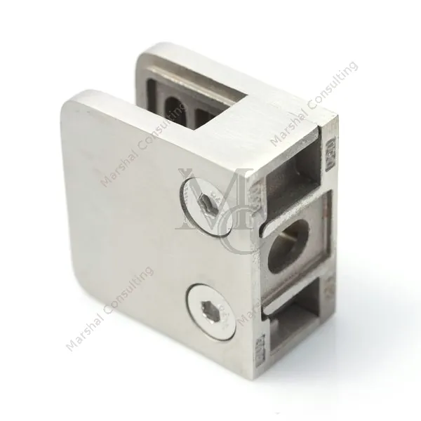
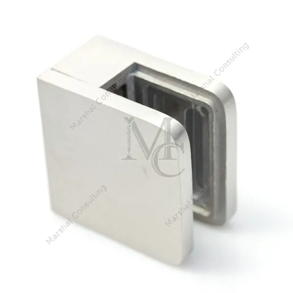
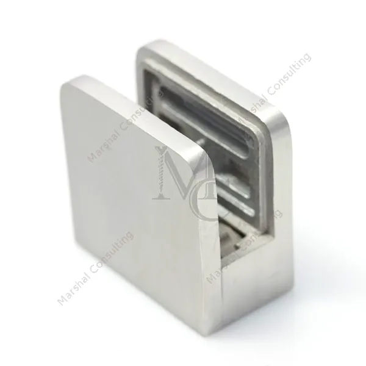
Model 4545 AISI 304
Uchwyt do szkła zaciskowy 4545 A2 00
14,16 zł 11,51 zł netto
Akcesoria do balustrad ze stali nierdzewnej: uchwyty do szkła, mocowania pręta i poręczy, stopy, zaślepki i profile do balustrad samonośnych. Przy każdym cena brutto i netto.
Przeglądaj kategorieStal AISI 304 (A2) i 316 (A4)Wysyłka DPDPrzelew lub pobranie
Każdy detal ma swój numer i swoje miejsce: 18 działów, ponad 150 podkategorii, od zaślepki po komplet profili do balustrady samonośnej.
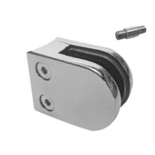
Uchwyty do szkła214 produktów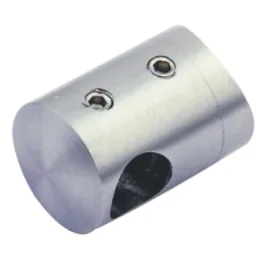
Mocowania pręta56 produktów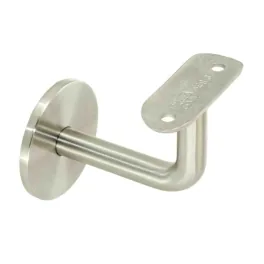
Mocowania poręczy108 produktów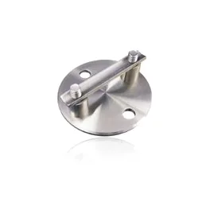
Stopy i maskownice76 produktów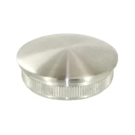
Zaślepki i kule83 produkty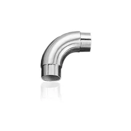
Kształtki, kolanka58 produktów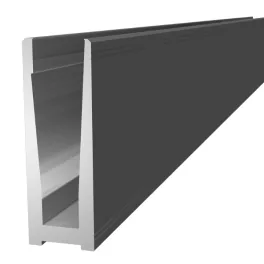
Balustrady samonośne103 produkty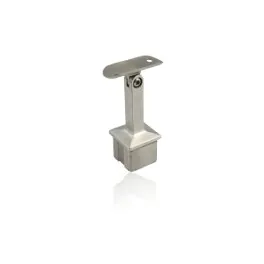
Profil kwadratowy 40x4059 produktów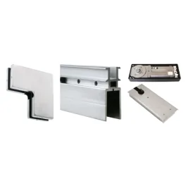
Systemy ścianek szklanych198 produktów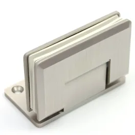
Akcesoria do kabin prysznicowych228 produktów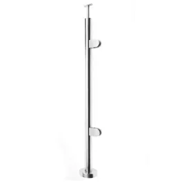
Słupki i pochwyty24 produkty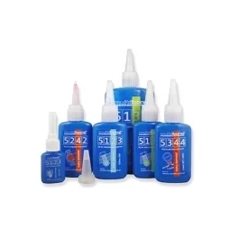
Chemia montażowa38 produktówPozostałe działy: Linki i mocowania Elementy złączne Akcesoria do drewna Balkony francuskie Zawiasy i zasuwki Daszki
Detale, po które klienci wracają najczęściej. Przesuń zdjęcia w karcie, żeby obejrzeć produkt z każdej strony.



Model 4545 AISI 304
14,16 zł 11,51 zł netto
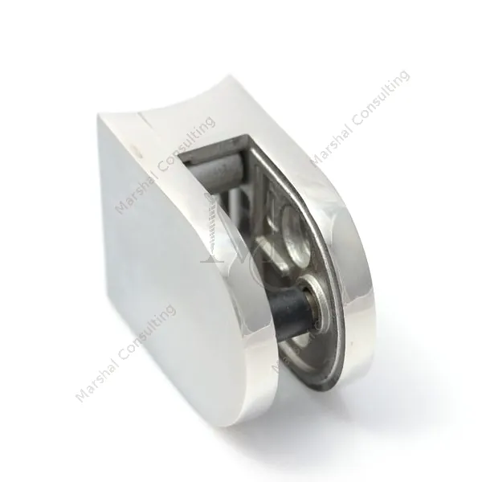
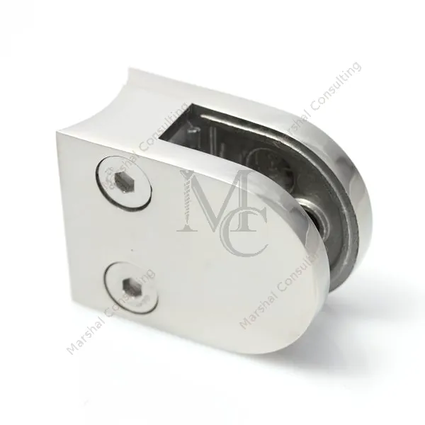
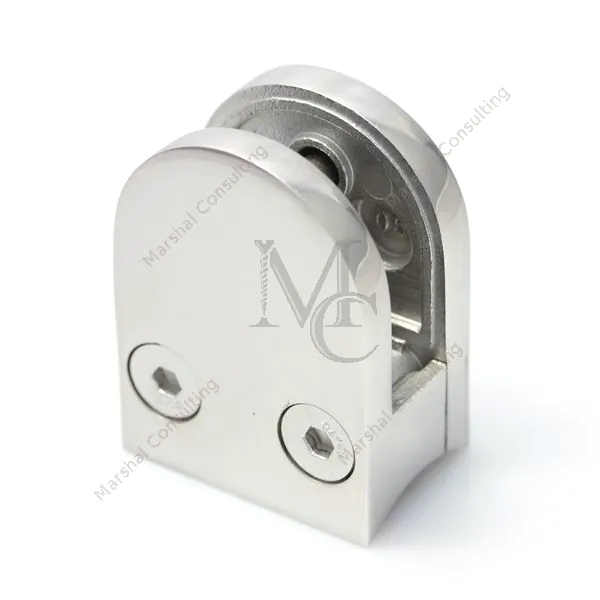
Model 4050 rura 42,4
22,46 zł 18,26 zł netto
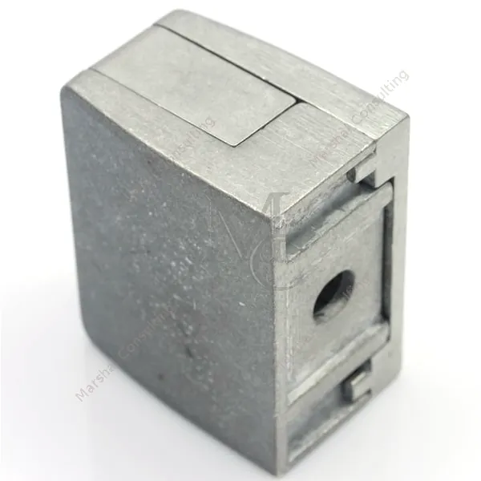
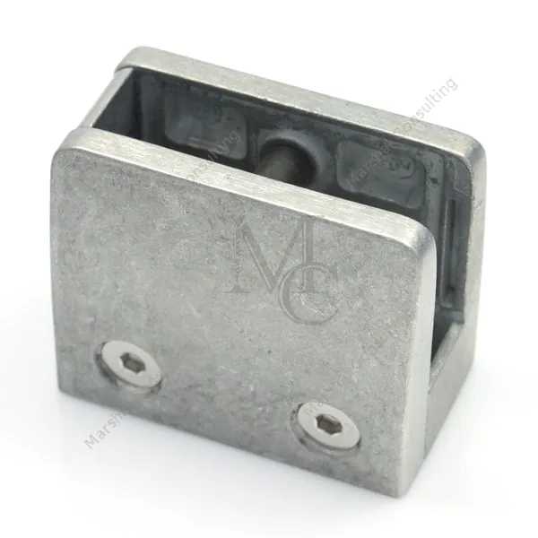
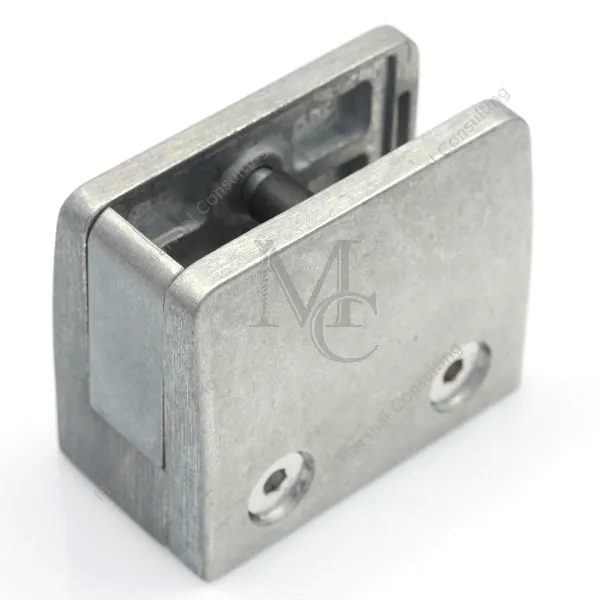
Model 5570 zaciskowy
31,46 zł 25,58 zł netto
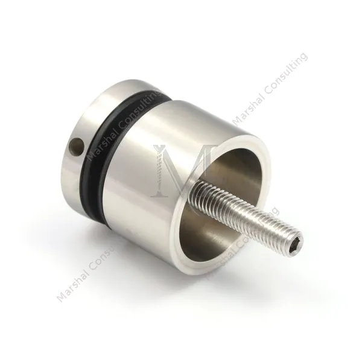
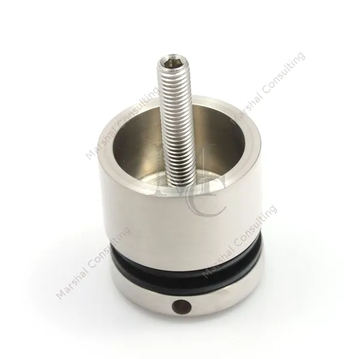
Punktowe 50 mm dystans 30 mm
35,86 zł 29,15 zł netto
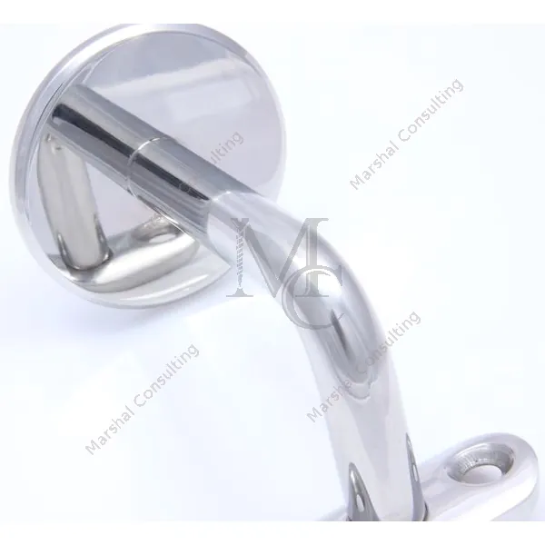
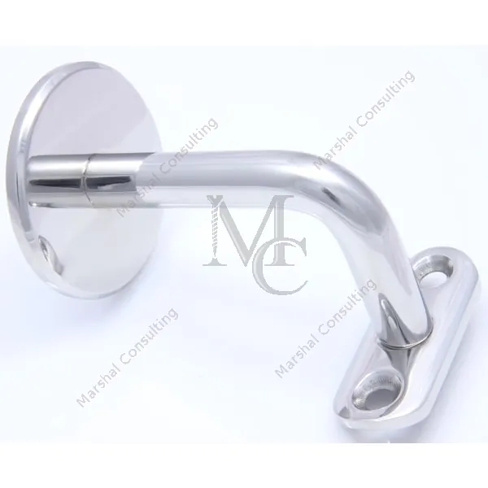
Mocowania poręczy polerowany
26,99 zł 21,94 zł netto
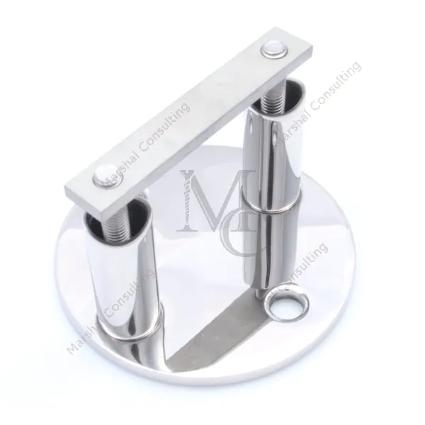
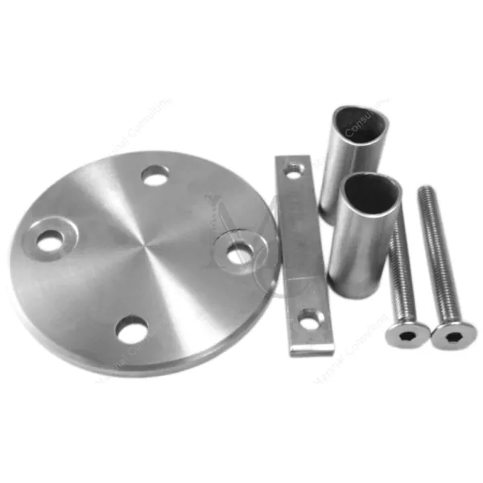
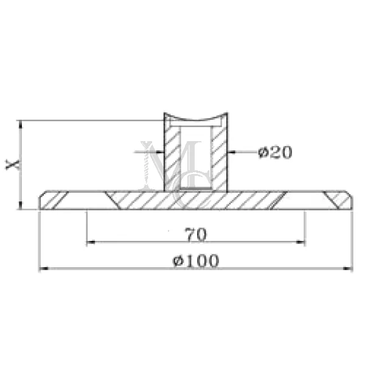
Mocowania boczne słupek 42,4
41,96 zł 34,11 zł netto
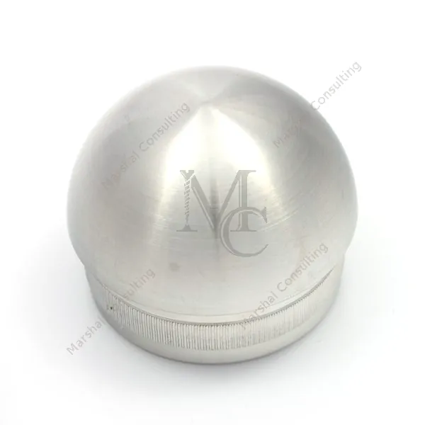
Zaślepki rura 33,7
10,36 zł 8,42 zł netto
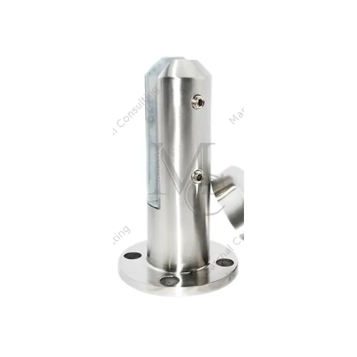
Balustrady samonośne satyna
129,15 zł 105,00 zł netto
Gdy detali jest dużo, łatwiej wybrać komplet pod sposób montażu: w posadzce, z boku płyty albo przy oknie.
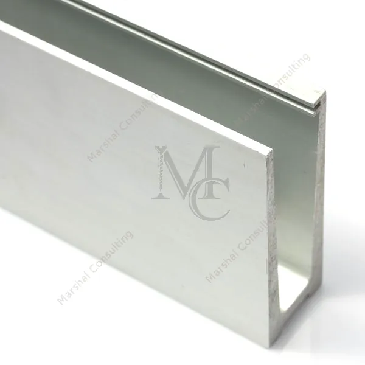
Balustrady samonośneProfile U i F do montażu w posadzce, U i Y do montażu bocznego, uszczelki, oklinowanie i maskownice.103 produkty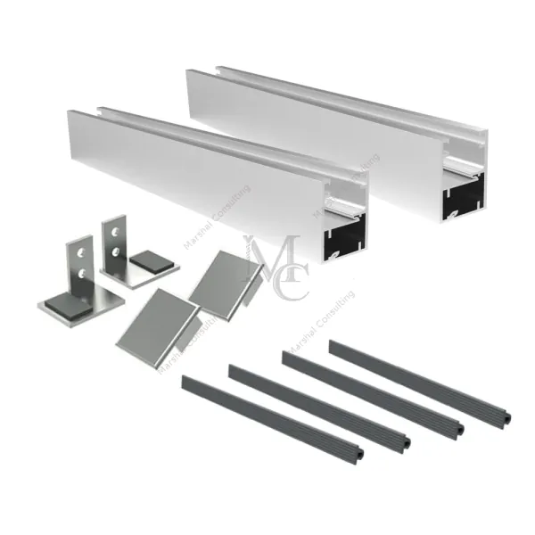
Balkony francuskieZestawy profili do fasady i do okna, w aluminium naturalnym, czarnym eloksalu i antracycie.25 produktów Słupki i pochwytySłupki okrągłe i kwadratowe do montażu od góry i z boku, w wersji poziomej i schodowej.24 produktyMały detal źle dobrany potrafi zatrzymać cały montaż. Jeśli nie wiesz, który element pasuje do Twojej rury albo grubości szkła, zadzwoń przed zamówieniem.
506 076 904Krótko o materiałach, z którymi pracujesz przy balustradzie.
Sklep prowadzi Marshal Consulting, dystrybutor wyrobów ze stali nierdzewnej, zamknięć przemysłowych i chemii przemysłowej Multibond. Pomagamy dobrać elementy i przygotowujemy oferty na większe zamówienia.